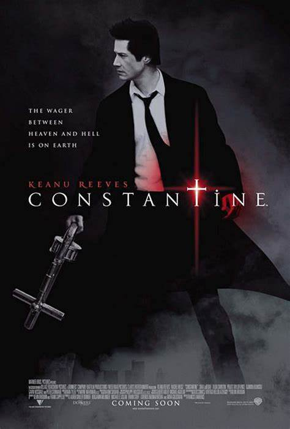
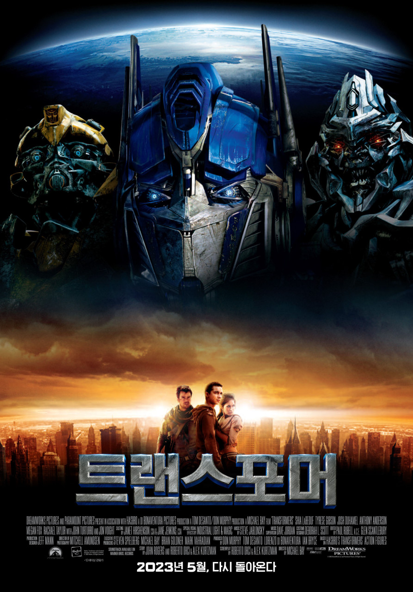
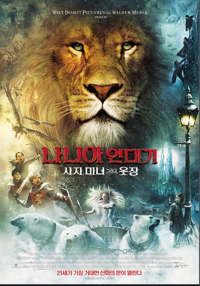
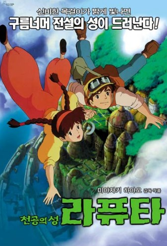
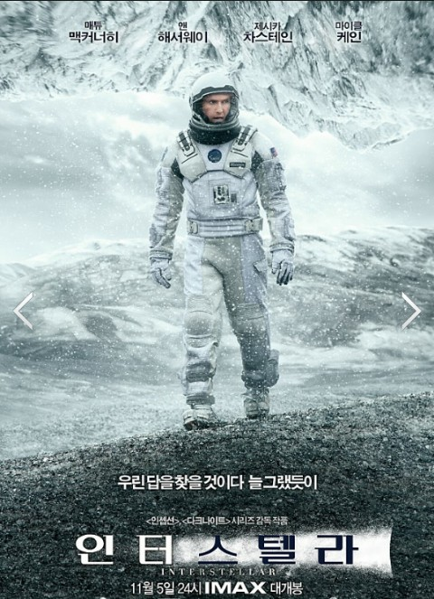

| 제목 | 포스터 | 줄거리 | 바로가기 |
|---|---|---|---|
| 콘스탄틴 |  | 상습 흡연자인 존 콘스탄틴은 천사와 악마의 간섭을 막는 일을 하며, 폐암 진단을 받은 그는 현세에 나타난 악마의 행동을 막기 위해 사투를 벌인다. | 바로가기 |
| 트랜스포머 |  | 거대 로봇들이 지구를 배경으로 전투하는 과학 판타지 영화이다. 오토봇과 디셉티콘의 전쟁이 펼쳐지며, 인간들도 이들의 전투에 휘말리게 된다. | 바로가기 |
| 나니아 연대기 - 사자, 마녀 그리고 옷장 |  | 나니아의 신비한 세계로 이어지는 초호화 판타지 영화 시리즈의 첫 번째 작품이다. 네 개의 자매와 마법의 옷장을 통해 발견된 나니아에서, 어린이들은 사자 아슬란과 함께 환상적인 모험을 떠나 마녀의 악을 막는다. | 바로가기 |
| 천공의 성 라퓨타 |  | 하늘을 날아다니는 성과 마법의 힘을 가진 소녀 소피아의 모험을 다루는 애니메이션 영화이다. 소피아는 이 성을 지키고자 악당과의 전투에 휘말리며, 용감하고 힘든 여정을 겪게 된다. | 바로가기 |
| 인터스텔라 |  | 우주 여행을 통해 인류의 생존을 위한 새로운 행성을 찾는 미래를 그린 과학적 판타지 영화이다. 이야기는 가족의 이야기와 우주 탐험의 위험에 대한 탐구가 얽혀있으며, 시공간을 넘나들며 새로운 세계를 찾는 여정을 그린다. | 바로가기 |